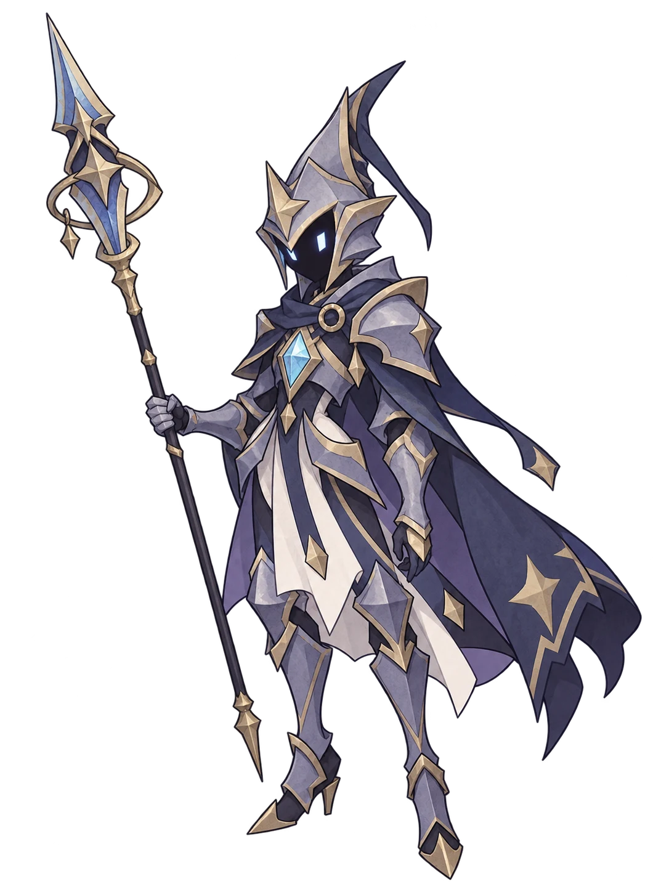

蒼星の回廊 先読み54枚 04.17
蒼星の魔法師
ブロック 0

蒼鎧の門番
あなたの手札
タップで確認 → 使う回廊のしおり：遊び方と保存
成長ループ試遊：新しい旅は魔力1・攻撃3の「小さな魔弾」5枚と魔力1・防御3の「薄い守り」5枚で出発。進化すると各5になります。第1〜3戦は初期札に合わせた相手です。最初の報酬は単体攻撃・組合せ・守り・補助から4択。取った1枚は次の初手へ。第2戦後は休息・進化・1枚除去の3択で、第4・5戦後にも除去できます。基本札は報酬には出ません。護符は従来どおりで、氷晶・雷鳴は対応する報酬を取ると働きます。月鏡は基本の守りでも働きます。
新しい旅の書庫には「星儀の調律者」が登場。休み→三連撃4×3→強打18を繰り返します。三連撃の詠唱中は手札の攻撃1枚ごとに各打撃−1、3枚で1×3。強打は一撃12以上で8になります。小さな攻撃の合計では強打を崩せません。保存中の冒険は以前の相手を維持します。
星儀の4枚は第2戦後から一般報酬に追加。星屑の瞬きは魔力0で攻撃1（進化2）・弱体1（進化2）、消滅。閉じる星環は魔力1で防御3（進化6）、支払い直後の魔力0なら次ターン防御6。星軌の追撃は魔力2で攻撃9（進化12）に前ターン最後の手札攻撃の実ダメージ半分（切捨て・最大8）を追加。調律の頁は魔力1で次ターン攻撃＋6（進化8）を予約、1枚（進化2枚）引いて消滅。同じ世界の既存画像を共有します。
ノアの追記4枚は第2戦後から報酬の一般枠に登場します。余白の灯は魔力0で次ターンの最初の攻撃＋4（進化6）を予約し、消滅。休符の星は魔力1で攻撃4（進化7）、敵が攻撃なしの行動なら追加4、さらに次ターン攻撃＋3（進化5）を予約。鏡頁の一閃は魔力1で攻撃4（進化7）と反射3（進化4）。ブロックはないため月鏡の護符は発動しません。返しの頁は魔力1で防御4（進化7）、捨て札のいちばん新しい攻撃1枚を山札の上へ戻します。今は引かず、消滅もしません。予約は次のターンの終わりで消えます。既存カードと書庫の絵を共有するため、名前と効果で見分けてください。
星綴りの司書ノアの4枚が加わりました。星継ぎは今の防御をすべて失い、次ターンへ最大10（進化14）を予約。凪の彗星は敵が休み・回復なら攻撃20（進化23）、攻撃行動なら10（進化13）。鏡頁の槍は反射をすべて消費し、その2倍を最大10まで攻撃へ足します。星の栞は捨て札のいちばん新しい攻撃1枚を山札の上へ戻し、消滅。未使用で捨てた攻撃も対象です。対象名は手札を選ぶと確認できます。凪と栞は第1戦後、星継ぎと槍は第2戦後から報酬候補です。どの護符・ルートでも取れます。
第3戦後に「星渡りの回廊」を選ぶとHP4を支払い、第4〜6戦の開始魔力が3になります（上限5）。HP4以下では選べません。第4戦の潮星の番人は、休み→引き潮14→満ち潮16。引き潮はターン終了時に魔力2以上なら6に軽減、満ち潮は魔力0なら8に軽減します。現在の予告は今の魔力・弱体・ブロックから計算し、札を使うたびに更新します。
星舟の結界は魔力1で4ブロック（進化で7）。支払い直後に魔力2以上なら追加6ブロック。潮引きの矢は魔力1で5ダメージ（進化で8）。支払い直後に魔力0なら弱体3（進化で4）。どちらも第2戦勝利後から報酬候補になります。
霜穿ちは使用前の弱体3以上で強化し、弱体を残します。詠止の結界は同じターンで既に詠唱を崩した後に使うと強化し、1枚引きます。鈴鏡の攻撃1〜2枚の部分軽減では成立せず、3枚で崩した時だけ成立します。詠止の結界は第2戦勝利後から報酬候補になります。保存中のデッキ・以前に開いた報酬は変えません。
追憶の矢は前ターン最後の手札攻撃の実ダメージ半分（切捨て・最大6）を追加します。反射は数えません。灰の守りは同じターンで先に消滅カードを使うと強化されます。天球儀のレリックは各戦闘1回。手札の上に未使用／使用済を表示し、デッキ画面で効果を確認できます。旧ルールの保存だけ、第2戦後はHP6の投資を選べます。成長試遊は代わりに1枚除去を選べます。
以前の保存は検証して引き継ぎ、直前の保存1件を端末内に控えます。すでに相手を選んだ冒険では、その相手を変えません。V4.3の控えがある場合は別に残し、控えは最大2件です。「最初から」は同じ番号で成長試遊を新しく始めます。旧保存の「続きから」はデッキ・敵の数値・報酬・魔力ルールを保持します。「保存を消す」はこの先読み版の保存と控えをすべて消します。24枚版の保存は触りません。
この「先読み54枚」は別の旅です。24枚版の保存は読み書きしません。「24枚の旅へ」で元の続きに戻れます。
星待ちは次ターンの最初の攻撃を予約。燃え残る星は支払い直後に魔力0なら次ターンのブロックを予約します。予約は今は効かず、次ターンの終わりに消えます。残火の帳は前ターン終了時の魔力0だけを判定。天頂の雷は使用前の魔力4以上で強くなります。先の敵行動は戦闘が続いた場合の基本威力で、弱体や詠唱崩し前の値です。HPの確定被害ではありません。
手札は下端の扇形に並びます。タップすると1枚が上がり、効果と「使う」を確認できます。上へドラッグして光る使用領域で放しても使えます。手札や領域外へ戻すと取消。扇の中を横へなぞると選ぶ札を変えられます。戦場は横幅いっぱいのまま。「使う」で実行、同じカードをもう一度タップ・「閉じる」・戦場の余白をタップすると使わず閉じます。魔力が足りないカードも確認できます。進化したカードのオレンジ色はそのままです。
新しい旅の基本2種は魔力1。各戦闘の最初は魔力2。2ターン目から＋3され、余った魔力は持ち越します。上限5。戦闘が変わると2に戻ります。星渡りの回廊を選んだ第4〜6戦だけは3で始まります。最初のターンに追加の回復はありません。以前の成長試遊の保存を続ける場合は基本2種が魔力0・自然回復＋1のままです。
「火花」は0コスト。魔力0で使うと強くなります。今使い切るか、次の強打のために貯めるかを選ぼう。「蓄電」で一時的に増やしても上限は5です。
手札は毎ターン5枚。余った手札は捨て札へ。山札が空なら捨て札を混ぜます。「消滅」は同じ戦闘中に戻らず、次の戦闘で復帰します。
ブロック・集中・反射はターン終了まで。弱体は次の敵の攻撃行動の各打撃に効き、重ねがけは最大値。連撃は1発ずつブロックを消費し、反射も1発ずつ発動。片方が倒れたら止まり、同時に倒れたら敗北です。
砕氷は弱体を消費して攻め、鏡撃はブロックを消費して攻めます。守りを失うことにも注意。詠唱中は表示されたダメージを与えると威力が下がりますが、攻撃は完全には止まりません。
全6戦・2章。報酬は4択か見送り。どちらでもHPを最大8回復します。第1章は泉の回復かHP投資の工房、第2章は初手を増やす書庫、最大HPの加護、HP4で開始魔力を増やす星渡りの回廊の3つから選びます。道中は回復14か1枚進化に加え、成長試遊では第2・4戦後に1枚除去も選べます。旧ルールの保存では第2戦後はHP6のレリック、第4戦後は1枚除去です。最後の前は回復16か1枚除去です。
同じプレイ番号・護符・操作順なら同じ結果になります。報酬や操作が変われば、山札を混ぜる時期も変わります。
対応ブラウザでは、この端末内に進行を自動保存します。「続きから」で再開。ブラウザやファイルの場所を変えた場合や、保存が制限された環境では引き継げません。保存できない場合は表示します。外部には送信しません。
縦向きでも続けられます。向きを強制したり、端末の権限を要求したりしません。図鑑の54枚は進化前の基本カードです。数値は試遊用。音なし。ゲーム内容や保存データは送信しませんが、初回読み込み・更新時にアプリ素材を取得します。